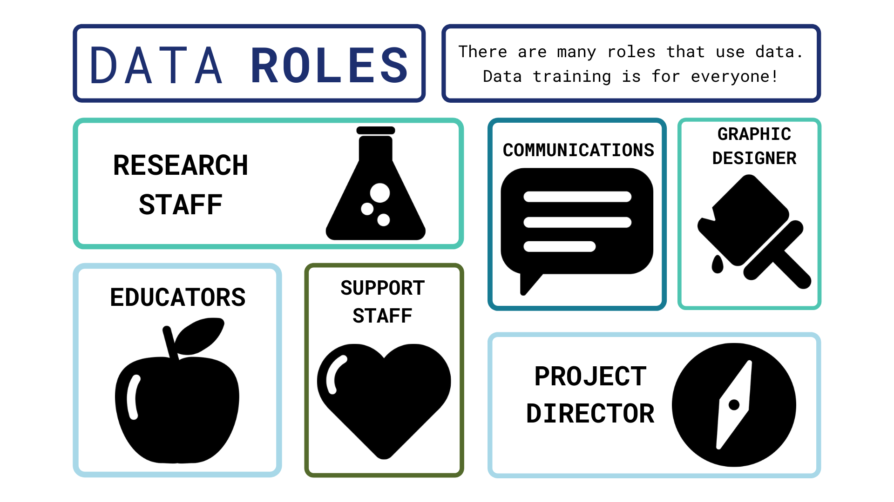

Data Management and Visualization Training
2021-11-23
Module 1 Introduction to Course
In this Session
1.1 Training Overview
Relevance: As environmental issues increase in scale and scope, there will be an increasing need to “tell the story” of monitoring and conservation efforts. To address this need, data enthusiasts - such as you - have an opportunity to expand their knowledge base in working with complex data sets to creatively convey impactful, data-driven messages to a variety of audiences. This compilation of training materials is intended to provide an accessible, digestible resource for anyone interested in any aspect of data management or visualization.
Background: This compilation of data management and visualization training materials stems from a multi-year engagement amongst the Palau International Coral Reef Center (PICRC), the Stanford Center for Ocean Solutions (COS), and the National Center for Ecological Analysis and Synthesis (NCEAS) through financial support by Future Earth. The funding supported a collaborative working group requested by former Palauan President, Tommy Remengesau, Jr. to investigate major implications of the full implementation of the Palau National Marine Sanctuary and compile a report of the findings (see PICRC page or COS page). One key lesson from that experience was the importance of enhancing the capacity for managing and visualizing data driven messages to more effectively communicate significant management findings.

Content: In this training package, you will learn about three core elements of data management and visualization. There are five modules, including this introductory module, each broken into several sessions. The core focus of this training is in Modules 2 and 3 with additional brief resources for storytelling or communication needs in Module 4.
- Module 2: Working with Data - including management of data resources, cleaning datasets, and normalizing & standardizing data sets and databases.
- Module 3: Visualizing Data - including a focus on using Tableau software to build or enhance visualization skills and resources.
- Module 4: Storytelling - including core principles in overall data communication, lessons in building and telling stories using your data sets, and working with external partners on visuals (such as graphic designers).
- The concluding module (Module 5) includes a collection of final messages and resources to aid you in your path forward.

Intended audience: In recognizing the wide range of roles and responsibilities individuals may have with respect to data use within an organization, this training is designed to be completed either in a sequence of all material from beginning to end or compartmentalized into modules and sessions to focus on specific skills. Whether you are a data novice interested in learning about all aspects of management and visualization, a data nerd who wants to learn more about visualization and communication, or a communications wizard who wants to be more familiar with data details or skills - this training package includes material to advance your understanding. This content is intended to equip you to better utilize and communicate data stories. In preparation for this course, it may help to briefly consider which data role(s) from the non-exhaustive list below best describes your interests and which lessons best suit your position and needs.
Required tools: To take this training you will need:
- An internet connection, either to download the training booklet and supplementary documents or to view the training through a web browser. Watching the videos in Module 3 on Tableau requires an internet connection.
- Access to the software Tableau for Module 3. Details on how to install Tableau are in Module 3, Session 1: Tableau Basics and this website provides details on the necessary operating system requirements to install Tableau.
- The example data sets for exercises in Modules 2 and 3 are provided as Microsoft Excel files.

- Authors: This Data Management and Visualization Training package is a collaborative effort amongst researchers and staff from PICRC, NCEAS, and COS. The core contributors to the existing content are recognized below.
1.2 How to Use These Materials
Overview: The content in the three core modules of this training package targets an audience of researchers or communicators seeking to build their skill set. Each module contains links to additional resources for those that are interested in deeper topical dives.
Materials: Some sessions include distilled handouts or briefs as well as short exercises to help you practice the skills while you are developing them.
- Briefs: Documents that can be utilized as a standalone resource - compiling core messages from a session.
- Exercises: Self-guided practical work to facilitate learning and enable exploration from a more conceptual framework.
- Video Tutorials: Recorded lessons (primarily in Module 4: Tableau) providing stepwise guidance to the interface and content.
Iteration: As previously mentioned, the content in this training package is intended to be revisited on an iterative basis as needed. You can proceed through the content in sequence or focus on the modules or sessions of most interest to you. Regardless of your specific data-related role in an organization, there are opportunities to gain greater mastery through iterative practice and collaborative learning.
Conclusion: The concluding module (Module 5) includes a compilation of resources for “at-a-glance” skill reminders and references for further investigation.